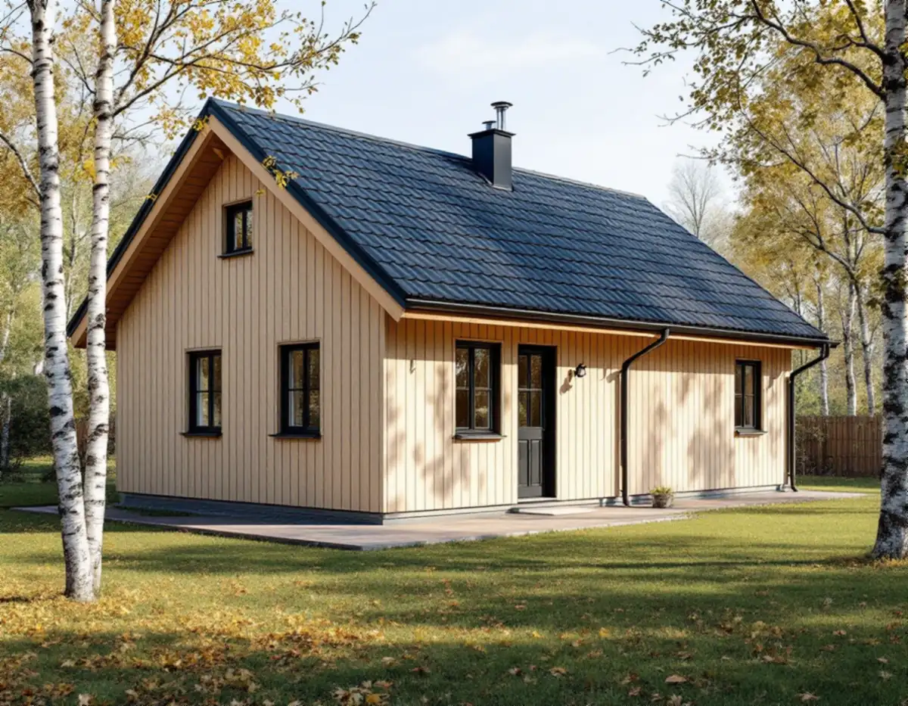
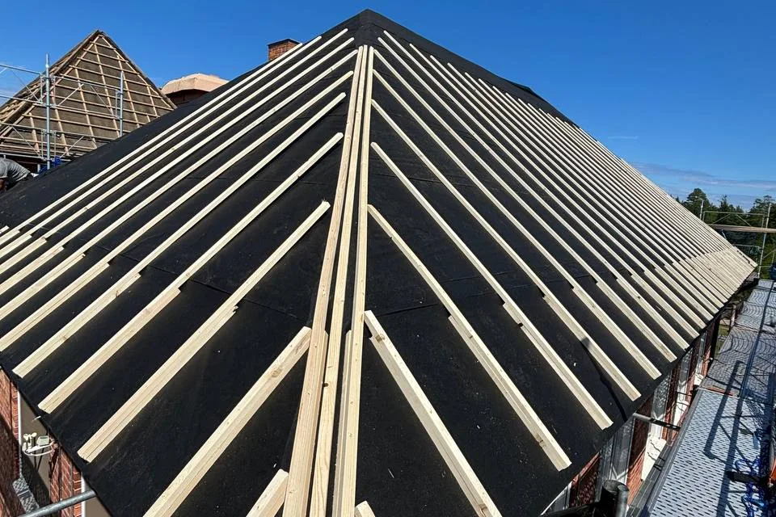
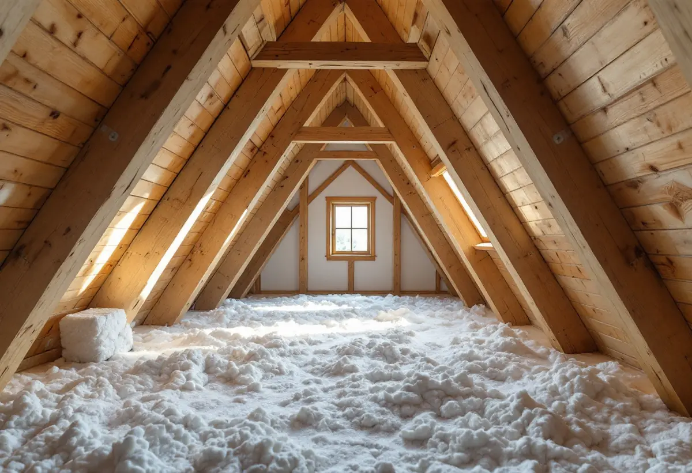

Platsbesök
Vi bedömer tak, takstolar och vind och ser om det nya materialet ändrar lasten.

Ett takbyte på en villa i Haninge kräver normalt inget bygglov.
Skicka gärna en bild på taket.
Något blev fel. Kontrollera uppgifterna eller ring 08 12 410 276.
Pris: från 1 400 kr/m² inkl. material, före ROT-avdrag
Vi tittar på jobbet på plats innan du får offert.
Du ser vad som ingår och vad det kostar.
Vi drar av ROT direkt och sköter ansökan.
Geal Entreprenad AB, Bromma. Org.nr 559303-7566.

Men när huset ligger i en värdefull miljö, eller när det nya taket påverkar bärande delar, behöver kommunen en kontrollplan. Geal Entreprenad AB byter tak i hela Haninge och hjälper dig att ta fram underlaget när ett ärende krävs.
Haninge kommun nämner byte av fasadbeklädnad eller taktäckningsmaterial som exempel på fasadändring. På ett en- eller tvåbostadshus krävs normalt inget lov för det, men lov behövs om ändringen görs på en byggnad eller i ett område som är särskilt värdefullt. Kommunen skriver att stora delar av Haninge är kulturmiljöer och att skärpta krav gäller i särskilt värdefulla områden och riksintressen. Kartskiktet som visar de miljöerna håller på att uppdateras, och tills det är klart kan bygglovsenheten svara på om en fastighet omfattas.
En anmälan behövs om arbetet påverkar byggnadens bärande konstruktion, och då krävs startbesked innan arbetet börjar. Det kan gälla när takstolar förstärks för ett tyngre material eller när en bärande del byts. Är du osäker på om en del är bärande hänvisar kommunen till en konstruktör, och ritningar som visar husets bärande delar kan ibland finnas i bygglovsarkivet. Du har också rätt att få åtgärden prövad i ett frivilligt lov.

Haninge har lagt ut ett exempel på en kontrollplan för fasadändring av en- och tvåbostadshus. Där finns punkter som passar ett takbyte väl: att utförandet stämmer med beslutsunderlaget, att befintliga konstruktioner har tillräcklig bärförmåga vid ökad eller omfördelad last, skydd mot fukt i byggnadskonstruktionen, att byggnadens energieffektivitet inte försämras, skydd mot brandspridning mellan byggnader och att utförandet görs varsamt enligt 8 kap. 17 § plan- och bygglagen.
För varje punkt anges vem som kontrollerar, hur det görs och mot vilket underlag. I exemplet står entreprenören som kontrollant för samtliga punkter, och den som har utfört kontrollen skriver under. När vi byter taket kontrollerar vi de punkter som gäller själva takarbetet, till exempel att underlag och infästningar görs enligt ritningen. Bärförmågan bedöms av en konstruktör när lasten ökar.
Kommunen påpekar att du som byggherre är ansvarig för att göra en riskanalys för projektet och att utifrån den ta fram kontrollplanen. Exemplet använder miniriskmetoden. Varje identifierad risk får ett värde för sannolikhet och ett för konsekvens, och tillsammans ger de ett riskvärde. När en risk i exemplet bedöms som medelhög eller hög läggs en punkt till i kontrollplanen.
För ett takbyte kan det handla om risken att vatten kommer in medan taket är öppet, att ett tyngre material belastar takstolarna mer än beräknat eller att ett takfall närmare än vanligt intill en grannbyggnad kräver hänsyn till brandspridning. Vi går igenom sådana risker vid platsbesöket, så att du har ett underlag till riskbedömningen innan kontrollplanen skrivs.
Vid en anmälan om ändring i bärande konstruktion tar Haninge upp en tomtkarta där byggnaden är markerad, en planritning i skala 1:100 och en teknisk beskrivning av bland annat bärande stomme och takkonstruktion. Konstruktionsritningar ska tas fram av konstruktörer, och vid större projekt kan även konstruktionsdokumentation och dimensioneringskontroll krävas. Till en fasadändring hör också en markering på tomtkartan av den byggnad som berörs.
Är du osäker på vad som gäller ber kommunen dig beskriva vad du planerar med mått, produktblad och gärna ett fotografi. Produktbladen för pannor, underlag och plåt får du av oss tillsammans med det skriftliga kostnadsförslaget. Om husens epoker och takformer i kommunen kan du läsa under takrenovering i Haninge, om falsad plåt och brutna tak under plåtslagare i Haninge och om våra tjänster i stort under takläggare i Haninge.
Vi bedömer tak, takstolar och vind och ser om det nya materialet ändrar lasten.
Vi går igenom om huset ligger i en värdefull miljö och om en anmälan behövs.
Produktblad och beskrivning av arbetet till riskbedömning och kontrollplan.
Rivning, underlag, ytskikt, plåt och ställning står var för sig.
Taket läggs enligt underlaget, och våra kontrollpunkter signeras under arbetet.
Vi går igenom taket och den ifyllda kontrollplanen med dig.
Att byta takpannor, plåttak, hängrännor och stuprör på ett småhus är rotarbete enligt Skatteverket. Det gäller även ställningsarbetet och byggstädningen efter takbytet, men inte bortforsling av byggmaterial och skräp.
Avdraget är högst 30 procent av arbetskostnaden, högst 50 000 kr per person och år och högst 75 000 kr tillsammans med rutavdrag. Material och resor ger inget avdrag. Är ni flera ägare som bor i huset kan ni dela på avdraget. Geal drar det direkt på fakturan.
Takets yta och lutning, valet av material, om takstolarna behöver förstärkas, hur mycket underlag som ska bytas, plåtarbetena och om ett ärende hos kommunen kräver extra underlag eller kontroller. Läs mer i vad kostar ett takbyte. Efter ett gratis platsbesök får du ett skriftligt kostnadsförslag.
Byte av tegel-, betong- och plåttak.
Takbyte →Takbyte, takbesiktning och plåtarbeten.
Takläggare i Haninge →Dalarö, Vendelsö och Brandbergen.
Takrenovering i Haninge →Skjutfält, kulturmiljö och skärgårdstomter.
Attefallshus i Haninge →Vakuumtoalett, sluten tank och öarna.
Badrumsrenovering i Haninge →Nytt hus och tillbyggnad i omvandlingsområden.
Byggföretag i Haninge →Mustiga 50-tal och pastell.
Fasadmålning i Haninge →Tegelvillor, grupphus och panelade gårdar.
Fasadrenovering i Haninge →Sportstugor och fönster i skärgårdsväder.
Fönsterbyte i Haninge →Gårdens fönster, från boningshus till ladugård.
Fönsterrenovering i Haninge →Egnahem, sportstugor och hus i sluttning.
Golvläggare i Haninge →Laga och slipa trägolvet i villan.
Golvslipning i Haninge →Egnahem, grupphus och Dalarö.
Köksrenovering i Haninge →Falsad plåt, sjöbodar och beslag i Haninge.
Plåtslagare i Haninge →Verandor, altaner och skärmtak.
Snickare i Haninge →Egnahem, grupphus och sommarvillor i Haninge.
Målare i Haninge →Ny tapet och gamla lager i äldre villor.
Tapetsering i Haninge →Lov, situationsplan och kontrollplan.
Tillbyggnad i Haninge →Folkhemsvillan inifrån.
Totalrenovering i Haninge →Eller ring 08 12 410 276, mån–fre 08–17.
Skicka gärna en bild på taket.
Något blev fel. Kontrollera uppgifterna eller ring 08 12 410 276.